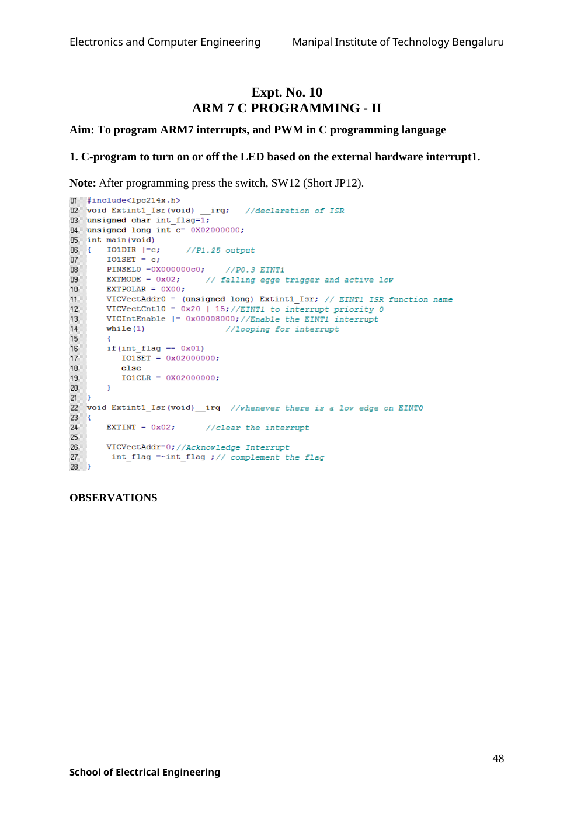

Copyable text transcription
OCR-generated from the original manual page. Check register names, labels, constants and punctuation against the reference image before using.
Electronics and Computer Engineering Manipal Institute of Technology Bengaluru
Expt. No. 10
ARM 7 C PROGRAMMING - II
Aim: To program ARM7 interrupts, and PWM in C programming language
1. C-program to turn on or off the LED based on the external hardware interrupt1.
Note: After programming press the switch, SW12 (Short JP12).
Ol #include<lpc214x.h>
02 void Extintl_Isr(void) __irg; //declaration of ISR
03 unsigned char int_flag=i;
04 unsigned long int c= 0X02000000;
05 int main(void)
06 { IO1DIR |=c; //P1.25 output
07 IO1SET = c;
08 PINSELO =0X000000c0; //P?0.3 EINT1
og EXTMODE = 0x02; // falling egge trigger and active lov
10 EXTPOLAR = 0X00;
n viCVectAddrO = (unsigned long) Extinti_Isr; // EINTi ISR function name
12 ViICVectCntl10O = 0x20 | 15;//EINT1 to interrupt priority 0
13 VICIntEnable |= 0x00008000;//Enable the EINT1 interrupt
14 while (i) //looping for interrupt
15 {
16 if(int_flag == 0x01)
até IO1SET = 0x02000000;
18 else
19 IO1iCLR = 0X02000000;
20 }
2}
22 void Extintl_Isr(void) irq //whenever there is a low edge on EINTO
iz {
24 EXTINT = 0x02; //clear the interrupt
yaa)
2a ViCVectAddr=0; //Acknowledge Interrupt
7 int_flag =~int_flag :// complement the flag
2}
OBSERVATIONS
48
School of Electrical EngineeringView original manual page (reference)
